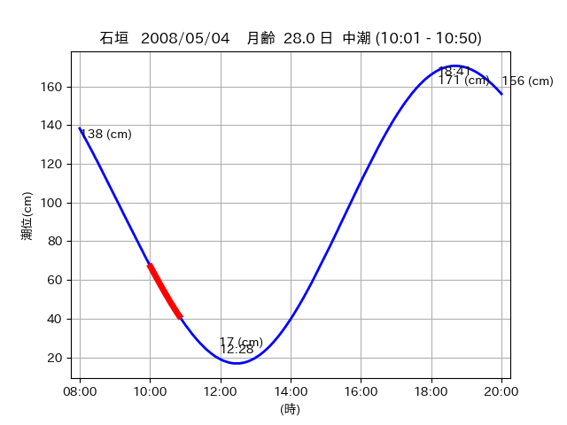
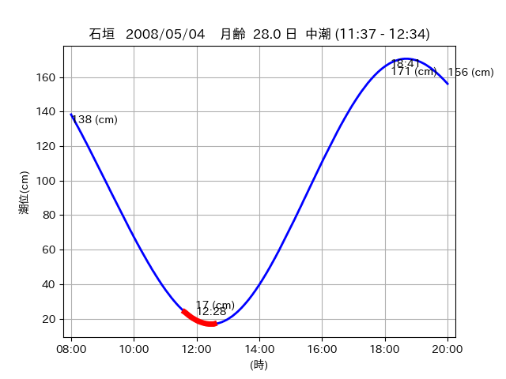
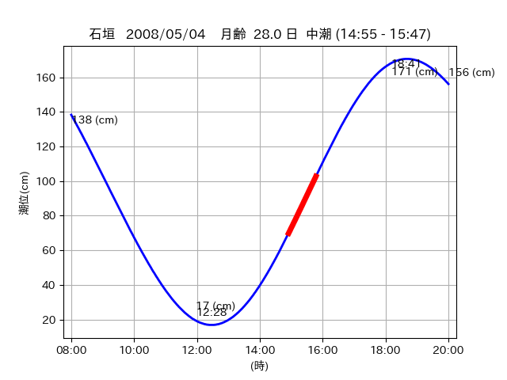

<!DOCTYPE html>
<html>
<head>
    
    <meta http-equiv="content-type" content="text/html; charset=UTF-8" />
    
        <script>
            L_NO_TOUCH = false;
            L_DISABLE_3D = false;
        </script>
    
    <style>html, body {width: 100%;height: 100%;margin: 0;padding: 0;}</style>
    <style>#map {position:absolute;top:0;bottom:0;right:0;left:0;}</style>
    <script src="https://cdn.jsdelivr.net/npm/leaflet@1.9.3/dist/leaflet.js"></script>
    <script src="https://code.jquery.com/jquery-3.7.1.min.js"></script>
    <script src="https://cdn.jsdelivr.net/npm/bootstrap@5.2.2/dist/js/bootstrap.bundle.min.js"></script>
    <script src="https://cdnjs.cloudflare.com/ajax/libs/Leaflet.awesome-markers/2.0.2/leaflet.awesome-markers.js"></script>
    <link rel="stylesheet" href="https://cdn.jsdelivr.net/npm/leaflet@1.9.3/dist/leaflet.css"/>
    <link rel="stylesheet" href="https://cdn.jsdelivr.net/npm/bootstrap@5.2.2/dist/css/bootstrap.min.css"/>
    <link rel="stylesheet" href="https://netdna.bootstrapcdn.com/bootstrap/3.0.0/css/bootstrap-glyphicons.css"/>
    <link rel="stylesheet" href="https://cdn.jsdelivr.net/npm/@fortawesome/fontawesome-free@6.2.0/css/all.min.css"/>
    <link rel="stylesheet" href="https://cdnjs.cloudflare.com/ajax/libs/Leaflet.awesome-markers/2.0.2/leaflet.awesome-markers.css"/>
    <link rel="stylesheet" href="https://cdn.jsdelivr.net/gh/python-visualization/folium/folium/templates/leaflet.awesome.rotate.min.css"/>
    
            <meta name="viewport" content="width=device-width,
                initial-scale=1.0, maximum-scale=1.0, user-scalable=no" />
            <style>
                #map_c9ff95b01625141c4df2a6ce62747c40 {
                    position: relative;
                    width: 2048.0px;
                    height: 1600.0px;
                    left: 0.0%;
                    top: 0.0%;
                }
                .leaflet-container { font-size: 1rem; }
            </style>
        
</head>
<body>
    
    
            <div class="folium-map" id="map_c9ff95b01625141c4df2a6ce62747c40" ></div>
        
</body>
<script>
    
    
            var map_c9ff95b01625141c4df2a6ce62747c40 = L.map(
                "map_c9ff95b01625141c4df2a6ce62747c40",
                {
                    center: [24.442, 124.27],
                    crs: L.CRS.EPSG3857,
                    ...{
  "zoom": 12,
  "zoomControl": true,
  "preferCanvas": false,
}

                }
            );

            

        
    
            var tile_layer_98e8d004eae274b9bd1655751716e414 = L.tileLayer(
                "https://cyberjapandata.gsi.go.jp/xyz/seamlessphoto/{z}/{x}/{y}.jpg",
                {
  "minZoom": 0,
  "maxZoom": 18,
  "maxNativeZoom": 18,
  "noWrap": false,
  "attribution": "\u5730\u7406\u9662\u5730\u56f3",
  "subdomains": "abc",
  "detectRetina": false,
  "tms": false,
  "opacity": 1,
}

            );
        
    
            tile_layer_98e8d004eae274b9bd1655751716e414.addTo(map_c9ff95b01625141c4df2a6ce62747c40);
        
    
            var marker_7d7a2f6af1290d9909cba0e2098e9410 = L.marker(
                [24.5341, 124.3143],
                {
}
            ).addTo(map_c9ff95b01625141c4df2a6ce62747c40);
        
    
            var icon_d75ac45183e65f77cfa9cefef42b5bbf = L.AwesomeMarkers.icon(
                {
  "markerColor": "orange",
  "iconColor": "white",
  "icon": "info-sign",
  "prefix": "glyphicon",
  "extraClasses": "fa-rotate-0",
}
            );
        
    
        var popup_7356dd4116b1ffd75e4105818ec4dcd8 = L.popup({
  "maxWidth": "100%",
});

        
            
                var html_79f603a62dfdf340e8da7592e7089add = $(`<div id="html_79f603a62dfdf340e8da7592e7089add" style="width: 100.0%; height: 100.0%;"><table><tr><td></td></tr><tr><td><center>20080504 No.1 </center></table></td></tr></table</div>`)[0];
                popup_7356dd4116b1ffd75e4105818ec4dcd8.setContent(html_79f603a62dfdf340e8da7592e7089add);
            
        

        marker_7d7a2f6af1290d9909cba0e2098e9410.bindPopup(popup_7356dd4116b1ffd75e4105818ec4dcd8)
        ;

        
    
    
                marker_7d7a2f6af1290d9909cba0e2098e9410.setIcon(icon_d75ac45183e65f77cfa9cefef42b5bbf);
            
    
            var poly_line_32d88bdffca4a6e374621dc08ce73665 = L.polyline(
                [[24.5341, 124.3143], [24.5297, 124.3137]],
                {"bubblingMouseEvents": true, "color": "#00FFFF", "dashArray": null, "dashOffset": null, "fill": false, "fillColor": "#00FFFF", "fillOpacity": 0.2, "fillRule": "evenodd", "lineCap": "round", "lineJoin": "round", "noClip": false, "opacity": 1.0, "smoothFactor": 1.0, "stroke": true, "weight": 3}
            ).addTo(map_c9ff95b01625141c4df2a6ce62747c40);
        
    
            var marker_d07fd085d75762d65daa551f4d729641 = L.marker(
                [24.5152, 124.3057],
                {
}
            ).addTo(map_c9ff95b01625141c4df2a6ce62747c40);
        
    
            var icon_b062a15c6a446983c84a77c4a9144739 = L.AwesomeMarkers.icon(
                {
  "markerColor": "orange",
  "iconColor": "white",
  "icon": "info-sign",
  "prefix": "glyphicon",
  "extraClasses": "fa-rotate-0",
}
            );
        
    
        var popup_7be663c0a8afa57ecdee4dcff8559256 = L.popup({
  "maxWidth": "100%",
});

        
            
                var html_99d70be48187c97f85db21148989112e = $(`<div id="html_99d70be48187c97f85db21148989112e" style="width: 100.0%; height: 100.0%;"><table><tr><td></td></tr><tr><td><center>20080504 No.2 </center></table></td></tr></table</div>`)[0];
                popup_7be663c0a8afa57ecdee4dcff8559256.setContent(html_99d70be48187c97f85db21148989112e);
            
        

        marker_d07fd085d75762d65daa551f4d729641.bindPopup(popup_7be663c0a8afa57ecdee4dcff8559256)
        ;

        
    
    
                marker_d07fd085d75762d65daa551f4d729641.setIcon(icon_b062a15c6a446983c84a77c4a9144739);
            
    
            var poly_line_a1c28ab0c5fb40ca7fe80c673579ae27 = L.polyline(
                [[24.5152, 124.3057], [24.5172, 124.3124]],
                {"bubblingMouseEvents": true, "color": "#FF00FF", "dashArray": null, "dashOffset": null, "fill": false, "fillColor": "#FF00FF", "fillOpacity": 0.2, "fillRule": "evenodd", "lineCap": "round", "lineJoin": "round", "noClip": false, "opacity": 1.0, "smoothFactor": 1.0, "stroke": true, "weight": 3}
            ).addTo(map_c9ff95b01625141c4df2a6ce62747c40);
        
    
            var marker_45491448565bf9c29470de94130a62e2 = L.marker(
                [24.4387, 124.2673],
                {
}
            ).addTo(map_c9ff95b01625141c4df2a6ce62747c40);
        
    
            var icon_2a2d4d89b17115894422cdd3d14e0d64 = L.AwesomeMarkers.icon(
                {
  "markerColor": "orange",
  "iconColor": "white",
  "icon": "info-sign",
  "prefix": "glyphicon",
  "extraClasses": "fa-rotate-0",
}
            );
        
    
        var popup_43e897a2ca140ece5aec29df32aac76c = L.popup({
  "maxWidth": "100%",
});

        
            
                var html_41f48656d76042464c723e7cf598448d = $(`<div id="html_41f48656d76042464c723e7cf598448d" style="width: 100.0%; height: 100.0%;"><table><tr><td></td></tr><tr><td><center>20080504 No.3 </center></table></td></tr></table</div>`)[0];
                popup_43e897a2ca140ece5aec29df32aac76c.setContent(html_41f48656d76042464c723e7cf598448d);
            
        

        marker_45491448565bf9c29470de94130a62e2.bindPopup(popup_43e897a2ca140ece5aec29df32aac76c)
        ;

        
    
    
                marker_45491448565bf9c29470de94130a62e2.setIcon(icon_2a2d4d89b17115894422cdd3d14e0d64);
            
    
            var poly_line_d8d7c5d96080fc8a6a7085881272fdb6 = L.polyline(
                [[24.4387, 124.2673], [24.4451, 124.2719]],
                {"bubblingMouseEvents": true, "color": "#FF00FF", "dashArray": null, "dashOffset": null, "fill": false, "fillColor": "#FF00FF", "fillOpacity": 0.2, "fillRule": "evenodd", "lineCap": "round", "lineJoin": "round", "noClip": false, "opacity": 1.0, "smoothFactor": 1.0, "stroke": true, "weight": 3}
            ).addTo(map_c9ff95b01625141c4df2a6ce62747c40);
        
</script>
</html>